Hey, I'm Mohamed
SOC Analyst & DFIR Specialist specializing in security monitoring, proactive threat detection, digital forensics, and security tool engineering. Currently completing intensive SOC & cybersecurity tracks at NTI (Fortinet SecOps) and ITI (Enterprise Network Hardening), working in DFIR at the Digital Egypt Pioneers Initiative (DEPI), and serving as a Cybersecurity Instructor at Zero2Aura.
Core Expertise & Skills
Security Operations & SIEM / EDR
Threat Intelligence & Detection Engineering
Digital Forensics & Incident Response (DFIR)
Enterprise Network Architecture & Hardening
Languages, Automation & SecOps
Featured Open-Source Projects
| Project | Description | Stack / Focus |
|---|---|---|
| 🔍 ThreatScopeX | Advanced log intelligence and threat detection engine with 115+ built-in detection rules | Python, MITRE ATT&CK, Sigma, STIX 2.1 |
| 📑 IR-Report-Generator | Browser-based incident response reporting tool supporting 40+ security tool artifacts | HTML5, CSS3, JS, MITRE Navigator |
| 🛡️ SOC Lab Project | End-to-end enterprise attack simulation, Wazuh detection, and automated IR simulation | Wazuh, Sysmon, EventLogs, Ubuntu, PowerShell |
| 🎣 Phishing IR Framework | Complete 6-phase email forensic investigation framework aligned with NIST 800-61 | Email Header Forensics, IOC Extraction |
Experience & Internships
National Telecommunication Institute (NTI) | SOC Analyst Intern (FortiAnalyzer + FortiSIEM) | August 2026 – Present
• Completing intensive SOC Analyst track focused on Fortinet Security Operations workflows: event examination, event handlers, automated playbooks, forensic analysis, and threat intelligence reporting.
• Using FortiAnalyzer for log collection and analysis, FortiView searches, incident management, threat hunting, custom reports, and Incident Response playbook creation and monitoring.
• Operating FortiSIEM for real-time and historic searches, event correlation, custom incident rules, dashboard configuration, and UEBA-based threat hunting with FortiGuard Threat Intelligence.
• Practicing detection, analysis, and remediation of security incidents using traditional and AI/ML-assisted methods; preparing for FCP – Security Operations and NSE 6 FortiSIEM Analyst certifications.
Information Technology Institute (ITI) | Cybersecurity Intern | April 2026 – Present
• Engineered and hardened multi-zone enterprise network architecture in Cisco Packet Tracer with multi-VLAN Layer 2/3 segmentation, dynamic DHCP, and multi-area OSPF routing for secure high-availability communication.
• Designed and enforced Extended ACLs to control traffic flow, isolate wireless zones, and restrict management-plane and server access to authorized hosts.
• Hardened network appliances by enforcing cryptographic SSH on VTY lines and restricting management access; successfully defended architecture before ITI evaluation panel.
• Completed modules in Cyber Security Essentials, Ethical Hacking & Vulnerability Assessment, and Huawei HCCDA Tech Essentials (cloud computing and ICT infrastructure).
Digital Egypt Pioneers Initiative (DEPI) | Digital Forensics Investigator | Jan 2025 – Present
• Conducting digital forensics examinations, artifact analysis, and memory/disk investigation.
Zero2Aura Tech Academy | Cybersecurity Instructor | Oct 2025 – Present
• Training students and aspiring security analysts in Cybersecurity, DFIR, Penetration Testing, and Networking.
Digital Egypt Pioneers Initiative (DEPI) | Cyber Security Incident Response Analyst | Oct 2024 – May 2025
• Analyzed security alerts, mapped incidents to MITRE ATT&CK, and executed IR playbooks.
The British University in Egypt (BUE) | Cyber Security Intern | Jul 2024
